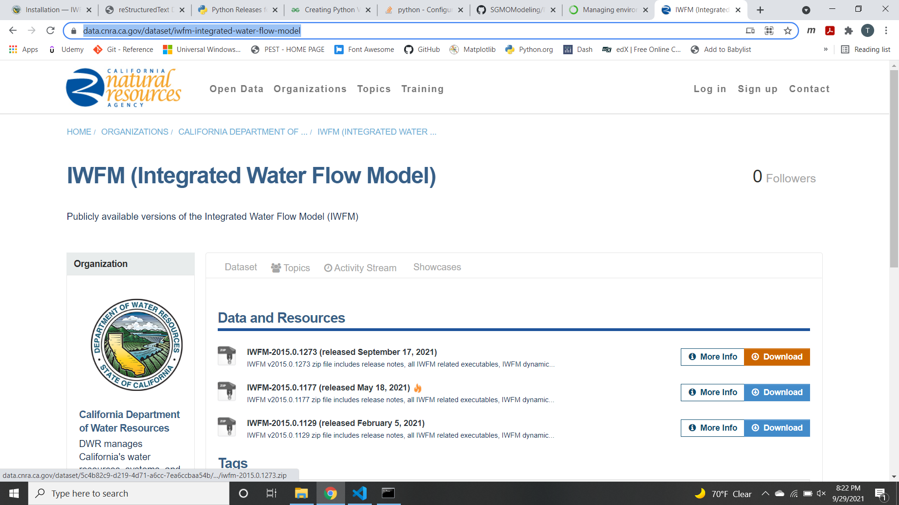

Installation¶
This guide is an overview and explains the installation process.
Overview¶
To use the pywfm package there are several steps required.
1. Make sure python 3 1 is installed on your computer and pip runs from the command line¶
To check your python version, open command prompt and type:
python --version
Note
if this command does not work, you will need to either install python or add python to the Path Environment Variable
To install python, go to: https://www.python.org/
2. Download the pywfm python code¶
pip install git+https://github.com/SGMOModeling/PyWFM.gitor
go to https://github.com/SGMOModeling/PyWFM and download the code as a ZIP archive.

Note
By downloading the ZIP archive of the pywfm package, the module can be upzipped and placed in a location of the users choice. a .pth file containing the path to the pywfm package can be saved in the site-packages folder of the python installation.
For example, with an ArcGIS Pro python environment the site packages folder for a cloned environment may be located here:
C:\Users\<UserName>\AppData\Local\ESRI\conda\envs\<VirtualEnvironmentName>\Lib\site-packages
3. Download the latest version of IWFM¶
Go to https://data.cnra.ca.gov/dataset/iwfm-integrated-water-flow-model
Click on the download button next to the latest version of IWFM
Important
Downloading IWFM includes the IWFM dll that the pywfm python module is dependent on to work